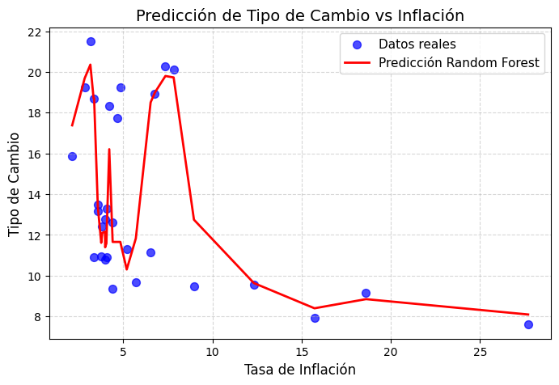
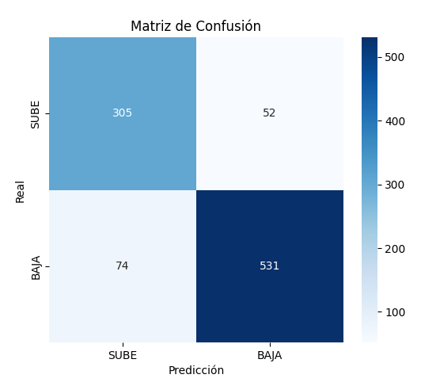
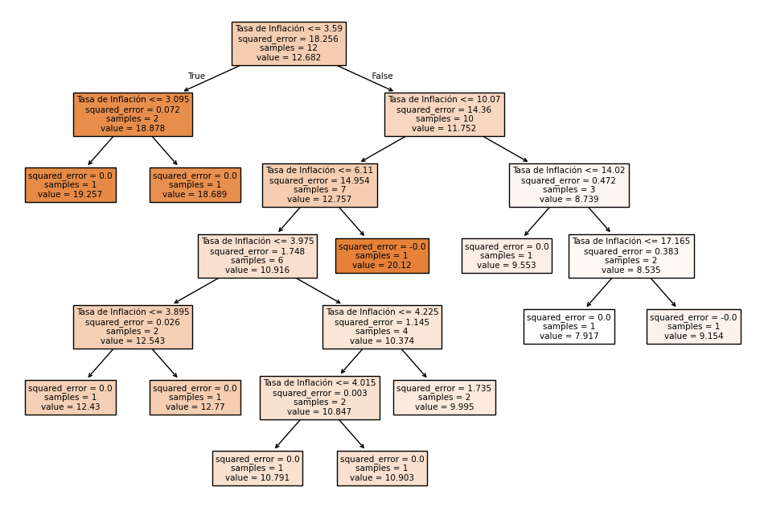

Análisis de la Devaluación del Peso Mexicano
Análisis histórico de la devaluación del peso mexicano y su impacto en la economía nacional · 1994–2025
Introducción
La devaluación del peso mexicano ha sido un fenómeno recurrente en distintos periodos de la historia económica del país, impactando tanto a nivel social como financiero. Este proyecto analiza la relación entre el tipo de cambio y la tasa de inflación mediante modelos de regresión polinomial, destacando tendencias clave y resultados significativos.
Periodo de Estudio
1994 - 2025
Método de Análisis
Random Forest
Fuentes de Datos
Banxico & INEGI
Resultados Estadísticos
Random Forest
Algoritmo de ensamble para regresión
0.8726
Alta precisión predictiva
87.26%
Tasa de acierto en predicciones
¿Qué es el Modelo Random Forest?
Random Forest es un algoritmo de aprendizaje automático que combina múltiples árboles de decisión para mejorar la precisión predictiva. Cada árbol se entrena con una muestra aleatoria de los datos, y las predicciones finales se obtienen promediando los resultados de todos los árboles.
¿Qué significa el Coeficiente R²?
El coeficiente R² (R-cuadrado) mide qué tan bien las variables independientes explican la variabilidad de la variable dependiente. Un valor de 0.8726 indica que el 87.26% de la variación en el tipo de cambio puede explicarse por las variables utilizadas en el modelo.
¿Cómo se calcula la Precisión del Modelo?
La precisión del 87.26% significa que el modelo acierta en sus predicciones el 87.26% de las veces cuando se compara con datos históricos reales. Esta métrica se calcula dividiendo el número de predicciones correctas entre el total de predicciones realizadas.
Visualizaciones Generadas
Random Forest: Tipo de Cambio vs Inflación

Matriz de Confusión

Primer Arbol de Decision

Predicción del Tipo de Cambio
Introduce los valores requeridos para estimar el tipo de cambio. Puedes dejar algunos campos vacíos para que se usen datos históricos según la fecha seleccionada.
Completa los campos para obtener una predicción.
Gráfica de Predicción – Modelo Random Forest
Datos Utilizados
Los siguientes conjuntos de datos fueron utilizados para el análisis histórico, provenientes de fuentes oficiales como Banxico, INEGI e Investing. Se incluyen enlaces directos y vistas previas de los archivos empleados en el modelo.
Tasa de Inflación (1996–2025)
Fuente: Proyectos México
| Año | Tasa (%) |
|---|---|
| 1996 | 34.4 |
| 2000 | 9.5 |
| 2010 | 4.4 |
| 2020 | 3.15 |
| 2024 | 4.67 |
Tipo de Cambio (1954–2025)
Fuente: Banco de México
| Fecha | Tipo de Cambio |
|---|---|
| 19/04/1954 | 0.0125 |
| 01/01/1994 | 3.1 |
| 01/01/2000 | 9.5 |
| 01/01/2010 | 12.6 |
| 01/01/2025 | 17.8 |
Precio del Petróleo (USD/barril)
Fuente: Investing.com
| Fecha | Precio (USD) |
|---|---|
| 2010 | 79.6 |
| 2015 | 48.7 |
| 2020 | 39.2 |
| 2022 | 93.5 |
| 2024 | 76.8 |
Tasa Objetivo (CF101)
Fuente: Banco de México
| Año | Tasa (%) |
|---|---|
| 2015 | 3.0 |
| 2018 | 7.5 |
| 2020 | 4.25 |
| 2023 | 11.25 |
| 2025 | 10.5 |
PIB Trimestral
Fuente: INEGI
| Año | PIB (millones MXN) |
|---|---|
| 2015 | 17,860,000 |
| 2018 | 20,360,000 |
| 2020 | 19,430,000 |
| 2022 | 21,100,000 |
| 2024 | 22,800,000 |
Reconocimiento de Emociones
Sistema de reconocimiento facial en tiempo real que detecta emociones utilizando inteligencia artificial. Esta funcionalidad experimental demuestra la aplicación de modelos de deep learning en análisis en tiempo real.
Estado: Activo
El sistema analiza expresiones faciales en tiempo real
Modelo de Deep Learning
Red neuronal convolucional entrenada para clasificar 7 emociones básicas
Análisis en Tiempo Real
Procesamiento de video en directo con detección facial
Precisión del Modelo
Alta precisión en condiciones de iluminación adecuadas
¿Qué es el Modelo de Deep Learning?
Es una red neuronal convolucional especializada en procesamiento de imágenes. Esta arquitectura puede identificar patrones complejos en rostros humanos y clasificarlos en 7 categorías emocionales: felicidad, tristeza, enojo, sorpresa, disgusto, miedo y neutral.
¿Cómo funciona el Análisis en Tiempo Real?
El sistema captura video continuo de la cámara, detecta rostros en cada fotograma usando algoritmos de computer vision, y procesa las imágenes faciales a través del modelo de deep learning para determinar la emoción predominante en tiempo real.
¿Qué factores afectan la Precisión del Modelo?
La precisión puede variar según la iluminación, la calidad de la cámara, la orientación del rostro, y la claridad de las expresiones faciales. El modelo fue entrenado con miles de imágenes etiquetadas para maximizar su efectividad en condiciones normales.
Dataset de Emociones Utilizado
Las siguientes imágenes representan ejemplos del conjunto de datos utilizado para entrenar el modelo de reconocimiento emocional. Este dataset proviene de Kaggle - Image Emotion Dataset.